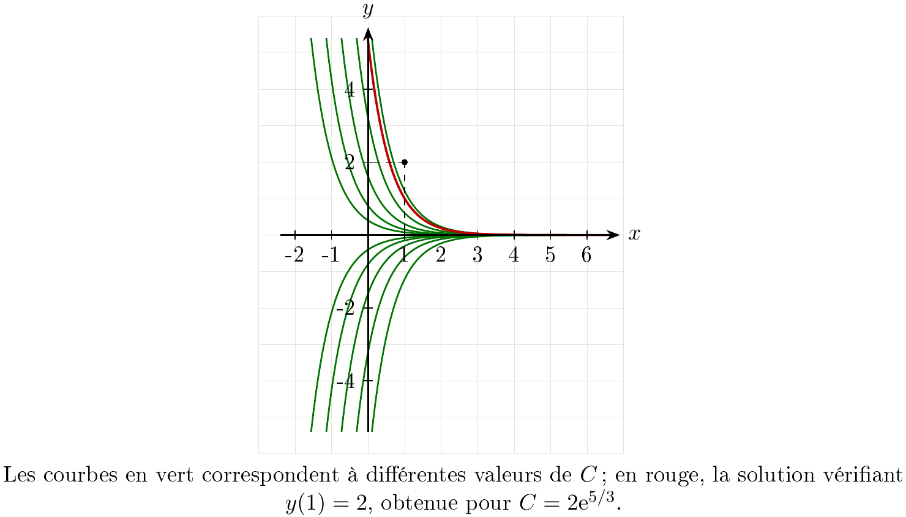

Chapitre 8 : Équations différentielles
Terminale spécialité · Chapitre 8 — Équations différentielles · cours de Frederik de Peyrelongue
I. Notion d'équation différentielle
Définition
Une équation fonctionnelle est une équation dont l'inconnue est une fonction.
On cherche les fonctions $f$ qui vérifient la propriété
L'inconnue est ici la fonction $f$. On peut remarquer que la fonction exponentielle est une solution de l'équation : on vient ainsi de montrer l'existence d'une solution. Le problème devient alors de déterminer si la solution est unique.
Une équation différentielle est une équation dont l'inconnue est une fonction et dont cette fonction inconnue et/ou ses dérivées apparaissent.
Le plus souvent, la fonction inconnue sera notée $y$.
a) $(E_{1}) : y'(t)=5$ pour $t\in\R$.
L'inconnue est la fonction $y$, qui dépend de la variable $t$. On cherche ici une fonction dont la dérivée est constante. D'après notre cours sur les primitives, on sait qu'une fonction du type $f(t)=5t+4$ est une solution : en effet $f'(t)=5$, donc la fonction $f$ vérifie l'équation $y'(t)=5$.
L'équation différentielle $(E_{1})$ peut se noter aussi $\dfrac{\mathrm{d}y}{\mathrm{d}t}=5$ : c'est la notation notamment des physiciens, qui permet d'indiquer par rapport à quelle variable la fonction est dérivée.
b) $(E_{2}) : y'(x)=2x$ pour $x\in\R$.
On remarque qu'une solution de cette équation est la fonction $f(x)=x^{2}+5$. On prouve ainsi l'existence ; se pose alors le problème de l'unicité.
Vérifier qu'une fonction est solution d'une équation différentielle
Pour prouver que la fonction $g$ définie sur $\left]0\,;+\infty\right[$ par $g(x)=3x^{2}+\e^{x}$ est solution de l'équation différentielle $y'=6x+\e^{x}$, on remplace la fonction $y$ par la fonction $g$ dans le membre de gauche de l'équation et, par le calcul, on vérifie que le membre de gauche est bien égal au membre de droite.
Pour tout $x$ de $\left]0\,;+\infty\right[$, la fonction $g$ est une somme de deux fonctions que je peux dériver terme à terme :
Donc $g$ est bien solution de l'équation $y'=6x+\e^{x}$.
II. Équations différentielles linéaires
Définition
Soit $y$ une fonction de la variable $x$. Si la fonction $y$ est dérivable, l'équation
est appelée équation différentielle du premier ordre à coefficients constants.
Soit $y$ une fonction de la variable $x$. Si la fonction $y$ est dérivable deux fois, l'équation
est appelée équation différentielle du second ordre à coefficients constants.
Notation. On peut noter $y'=\dfrac{\mathrm{d}y}{\mathrm{d}x}$ : on indique ainsi que la fonction est dérivée par rapport à la variable $x$.
2.2 Équation différentielle linéaire homogène du premier ordre $y'=ay$
L'équation différentielle du premier ordre
admet comme solutions les fonctions
où $C$ est une constante réelle quelconque.
Remarque. C'est un théorème d'existence de solution. Le nombre de solutions est infini ! Le paramètre $C$ peut prendre toutes les valeurs, y compris zéro.
Les fonctions proposées sont solutions. Montrons que les fonctions de type $f(x)=C\e^{ax}$ sont solutions de l'équation :
donc les fonctions de type $C\e^{ax}$ sont toutes des solutions.
Réciproquement. Montrons que les fonctions solutions sont toutes de la forme $C\e^{ax}$. Soit $y$ une solution de $(E_{0})$. On considère alors la fonction $z$ définie par $z(x)=y(x)\times \e^{-ax}$. Alors
car $y$ est solution de $(E_{0})$.
Donc $z'(x)=0$ pour tout $x$, ce qui donne $z(x)=C$ avec $C\in\R$, d'où
l'équation différentielle $y'=ay$, $a\in\R$, alors $f+g$ et $kf$, $k\in\R$, sont également solutions de l'équation différentielle.
- $(f+g)'=f'+g'=af+ag=a(f+g)$ ;
- $(kf)'=kf'=k\times af=a(kf)$.
Méthode : résoudre une équation différentielle du type $y'=ay$
On considère l'équation différentielle $3y'+5y=0$.
- Déterminer l'unique solution telle que $y(1)=2$.
Corrigé.
1) a) On met l'équation sous la forme $y'=ay$ :
L'équation $(E_{0})$ est une équation différentielle linéaire homogène du premier ordre ; ses solutions sont de la forme
b) Pour différentes valeurs de $C$, on obtient les courbes ci-dessous.

2) La condition initiale $y(1)=2$ va déterminer une unique valeur de $C$. La condition initiale impose que
Conclusion. L'équation différentielle avec la condition initiale $y(1)=2$ a pour unique solution
III. Équations différentielles du type $y'=ay+b$
Solution particulière
On appelle solution particulière de l'équation $y'=ay+b$ une solution quelconque de cette équation.
On remarque qu'il existe une solution constante de cette équation. En effet, soit $f_{0}(x)=k$ une fonction constante : alors $f_{0}'(x)=0$, et en remplaçant dans l'équation on obtient
L'équation est donc vérifiée : la fonction $f_{0}(x)=-\dfrac{b}{a}$ est une solution particulière de l'équation.
Pour l'équation $y'=5y+3$, la fonction $f_{0}(x)=-\dfrac{3}{5}$ est une solution particulière.
La fonction
est solution de l'équation différentielle $y'=ay+b$ (avec $a\neq 0$). Cette solution est appelée solution particulière constante.
Solutions générales de l'équation différentielle du premier ordre
L'équation différentielle du premier ordre $y'=ay+b$, avec $a$ et $b$ réels, se résout en trois étapes.
Étape 1. Dans un premier temps, on annule la constante $b$ et on obtient l'équation dite « homogène » : $y'=ay$. Cette équation homogène admet comme solutions l'ensemble des fonctions $y_{C}(x)=C\e^{ax}$, avec $C\in\R$.
Étape 2. Dans un second temps, on recherche une solution particulière sous la forme d'une fonction constante : la fonction $y_{0}(x)=-\dfrac{b}{a}$ est une solution particulière.
Étape 3. Les solutions de l'équation différentielle $y'=ay+b$ ($a$ et $b$ deux réels, $a$ non nul) sont la somme des fonctions solutions de l'équation homogène et de la solution particulière :
Remarque. L'équation $y'=ay+b$ est appelée équation différentielle linéaire du premier ordre à coefficients constants.
Corollaire. Les solutions de l'équation différentielle linéaire du premier ordre $y'=ay+b$ sont les fonctions de la forme
3.3 Méthode : résoudre une équation différentielle du type $y'=ay+b$
On considère l'équation différentielle $2y'-y=3$.
- Déterminer la forme générale des solutions de l'équation.
- Déterminer l'unique solution telle que $y(0)=-1$.
Corrigé.
1) Étape 0. On transforme l'équation sous la forme $y'=ay+b$ :
Étape 1. Recherche d'une solution particulière constante $y_{0}(x)=k$. On veut que $y_{0}$ soit solution, donc $y_{0}'(x)=0$ ; on remplace dans l'équation et on obtient
Donc $y_{0}(x)=-3$ est une solution particulière.
Étape 2. On résout l'équation différentielle homogène associée $y'=\dfrac{1}{2}y$. Les solutions sont de la forme $y_{C}(x)=C\e^{\frac{1}{2}x}$, $C\in\R$.
Étape 3. Les solutions générales de l'équation $y'=\dfrac{1}{2}y+\dfrac{3}{2}$ sont la somme des fonctions solutions de l'équation homogène et de la solution particulière :
Nous avons une infinité de solutions.
2) Étape 4. Si on impose une condition initiale, ici $y(0)=-1$, cette condition va déterminer une unique valeur de $C$. En effet, avec la condition initiale on a
Conclusion. L'équation différentielle $2y'-y=3$ avec la condition initiale $y(0)=-1$ a une unique solution :
IV. Équation différentielle $y'=ay+f$ avec $a\neq 0$
Soit $g$ une solution de $(E) : y'=ay+f$. Alors $y$ est solution de $(E)$ si et seulement si $y-g$ est une solution de l'équation homogène associée $(E_{0}) : y'=ay$.
Soit $g$ une solution particulière de $(E)$, donc $g'-ag=f$.
Soit $y$ une solution de $(E)$. Alors $y'-ay=f=g'-ag$, d'où $y'-g'-a(y-g)=0$, c'est-à-dire $(y-g)'-a(y-g)=0$ : la fonction $y-g$ est solution de $(E_{0}) : y'=ay$.
Réciproquement, si $y-g$ est solution de $(E_{0})$, alors $(y-g)'-a(y-g)=0$, soit $y'-ay=g'-ag=f$ : $y$ est solution de $(E)$.
Soit $(E) : 2y'+3y=6x+1$.
- Trouver une solution particulière sous la forme $g(x)=ax+b$.
- Résoudre $(E_{0}) : 2y'+3y=0$.
- Résoudre $(E)$.
Corrigé.
1) $g(x)=ax+b$ est une solution particulière de $(E)$, donc
Deux polynômes sont égaux si et seulement si ils ont les mêmes coefficients ; par identification :
Donc $g(x)=2x-1$ est une solution particulière de $(E)$.
2)
C'est une équation différentielle linéaire homogène du premier ordre : les solutions sont de la forme $y=k\e^{-\frac{3}{2}x}$, $k\in\R$.
3) Soit $y$ une solution de $(E)$. D'après la propriété \ref{prop:somme}, $y-g$ est solution de $(E_{0})$, c'est-à-dire
donc $(y-g)$ est solution de $(E_{0}) : 2y'+3y=0$, et
Finalement